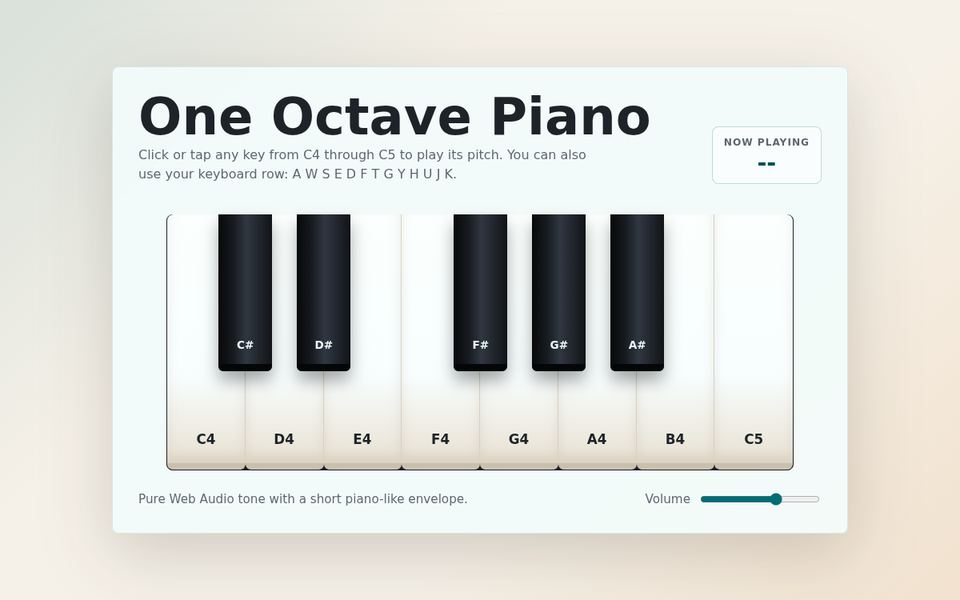
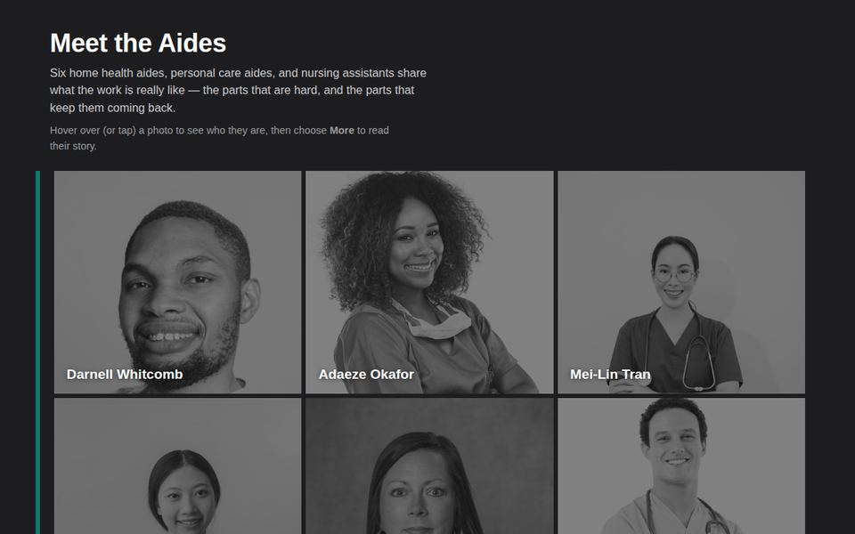
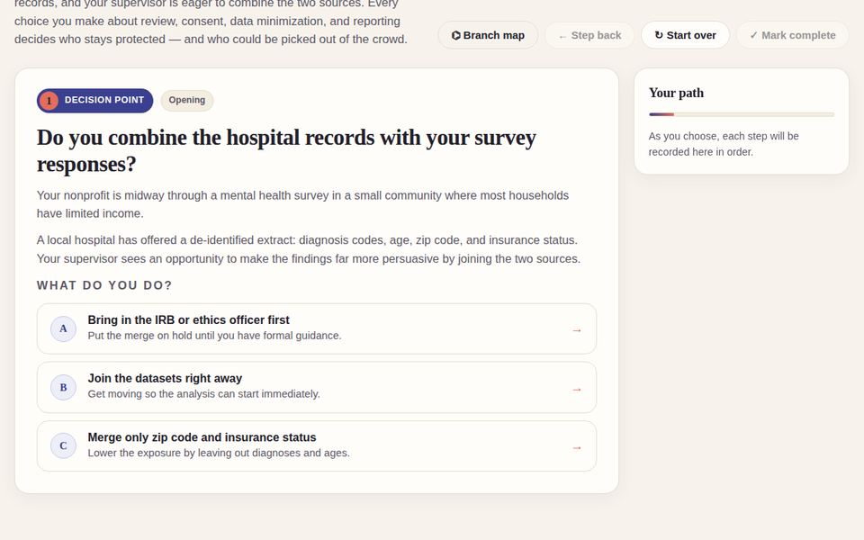
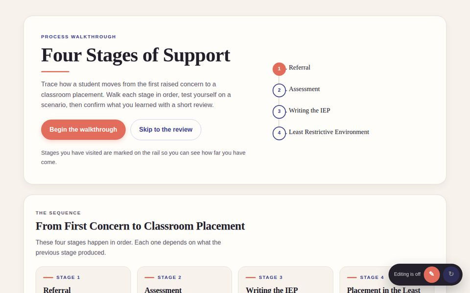

Types of work
Every sample below is a live, working object. Open one, click around, and imagine it with your content.
Immersive & 3D Explore
For skills that depend on spatial understanding: assessing an environment, recognizing equipment, or practicing a setup before doing it for real.
Walkable 3D spaceFirst-person walkthrough of a furnished home with guided assessment tasks and a checklist.Open sample
3D object explorerRotate, inspect, and label real equipment models with step-by-step setup guidance.Open sample

Instruments & simulatorsA playable one-octave piano with synthesis, note labels, and keyboard control.Open sample
Scenarios & storytelling Decide
For judgment-heavy topics where the right answer depends on context: ethics, communication, policy, and professional practice.

Interactive infographicProfile cards and expandable stories that turn a static handout into something explorable.Open sample
Branching scenarioA multi-path decision story with consequences, reflection prompts, and a debrief at the end.Open sample
Visual explainers Understand
For sequences, systems, and relationships that are hard to hold in your head from a paragraph of text.

Interactive timelineA stage-by-stage process with expandable detail, key terms, and a progress indicator.Open sampleInteractive map / system diagramA policy ecosystem map with clickable nodes, relationships, and filters.Open sample
Practice & assessment Check
Low-stakes practice with instant feedback, drawn from a library of 20+ interaction types: quizzes, flashcards, drag-the-words, drag-and-drop sorting, dropdown cloze, mark-the-words, hotspots, matching, crosswords, sliders, documentation tools, and more. Each one can report a score to your LMS gradebook when packaged as SCORM.
Also available: drag-and-drop sorting, dropdown cloze, mark-the-words, find-the-hotspot, image and movement sliders, term and picture matching, puzzles, and Unity-built WebGL simulations. If you can describe the interaction, it can probably be built.